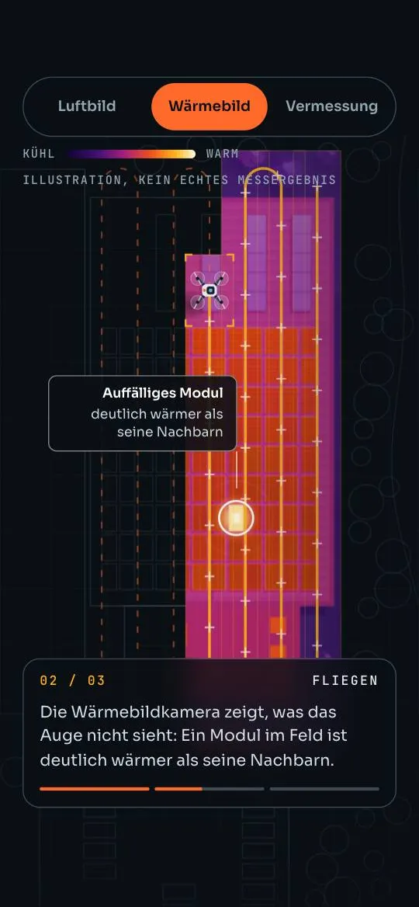

Beispiel · erfundener Betrieb
Website für Drohnen-Dienstleister erstellen lassen: die Beispielseite Havelblick Luftservice
Sie fliegen Drohnen für Inspektion, Wärmebild oder Vermessung und möchten eine Website erstellen lassen, die Ihre Arbeit erklärt, bevor jemand anruft? Diese Beispielseite für einen erfundenen Drohnen-Dienstleister zeigt, wie MAKE Studios so eine Seite baut.
Ein Drohnen-Dienstleister, der seine Arbeit erlebbar macht. Beim Scrollen fliegt eine Drohne in Streifen über eine Anlage, und man wechselt zwischen Luftbild, Wärmebild und Vermessung. Ergebnisse, Nachweise und Anfrage folgen.

Welche Aufgabe löst die Seite?
Wer neue Technik anbietet, muss sie erklären können, bevor jemand anruft. Die Seite macht den Flug einer Inspektionsdrohne zum Erlebnis, nennt Leistungen und Ergebnisse klar, belegt Zulassungen und Sicherheit und führt zu einer Anfrage mit Ort und Zweck.
Was enthält die Seite?
- Flug beim Scrollen
- Wärmebild-Ansicht
- Nachweise
Der Einstieg ist eine angeheftete Szene: Beim Scrollen fliegt eine Drohne in Streifen über eine gezeichnete Gewerbeanlage, und Besucher wechseln zwischen Luftbild, Wärmebild und Vermessung. Es folgen vier Leistungen, die Ergebnisse zum Anklicken von Orthofoto bis Bericht, der Ablauf in fünf Schritten, Zulassungen und Sicherheit mit Feldern für die Nachweise, ein Regler für den Vergleich von Foto und Wärmebild, die Preislogik, fünf Fragen und ein Formular mit Ort und Zweck. Alle Bilder sind gezeichnete Illustrationen.
Wie jede unserer Seiten ist sie zuerst für das Handy gestaltet und lädt schnell.
Für wen passt so eine Seite?
Für Unternehmen mit innovativen Produkten und Dienstleistungen aus Technik, Energie, Messen und Prüfen, die erklärungsbedürftig sind und Vertrauen durch Nachweise brauchen.
Häufige Fragen zur Website für Drohnen-Dienstleister
Wie erklärt eine Website, was eine Drohne von oben sichtbar macht?
Mit einem Bild, das sich bewegen lässt. Auf der Beispielseite Havelblick Luftservice fliegt beim Scrollen eine Drohne in Streifen über eine gezeichnete Anlage, und Besucher wechseln selbst zwischen Luftbild, Wärmebild und Vermessung. Die Bilder dort sind Illustration; Ihre echten Aufnahmen setzen wir an dieselbe Stelle.
Wohin gehören Genehmigung, Qualifikation und Versicherung?
In einen eigenen Abschnitt zu Zulassungen und Sicherheit, den Besucher vor der Anfrage finden. Die Beispielseite hat dort Felder für Nachweise. Eingetragen wird nur, was Sie belegen können; wir tragen nichts für Sie ein.
Wie zeigt die Seite, was ein Bericht enthält?
Die Ergebnisse stehen zum Anklicken da, vom Orthofoto bis zum Bericht. So sehen Besucher, was sie bekommen, und nicht nur, wie lange geflogen wird. Wenn Sie Beispielberichte freigeben, bauen wir sie an dieselbe Stelle.
Wie lässt sich der Preis erklären, wenn jeder Einsatz anders ist?
Die Beispielseite erklärt, wovon der Aufwand abhängt, und nennt keine erfundene Zahl. Eine Preisangabe kommt nur auf die Seite, wenn Sie sie festlegen.
Was fragt das Formular vor einem Einsatz ab?
Ort und Zweck, damit Sie vorab einschätzen können, was gebraucht wird. In der Beispielseite sendet das Formular nichts. Bei Ihrer Seite legen wir mit Ihnen fest, wohin die Anfragen gehen.
Wie entsteht Ihre eigene Seite?
In sechs Schritten: Briefing, Design, Feedback, Umsetzung, Abnahme, Live. Sie sehen den Entwurf, bevor wir bauen, und online geht die Seite erst mit Ihrem Okay. Zum Ablauf
Websites gibt es ab 2.990 € netto, einmalig. Alle Preise finden Sie bei MAKE Innovation: Alle Preise. Mehr zu Video und Reels und zu Social Media steht auf der Startseite.
Stand: November 2026